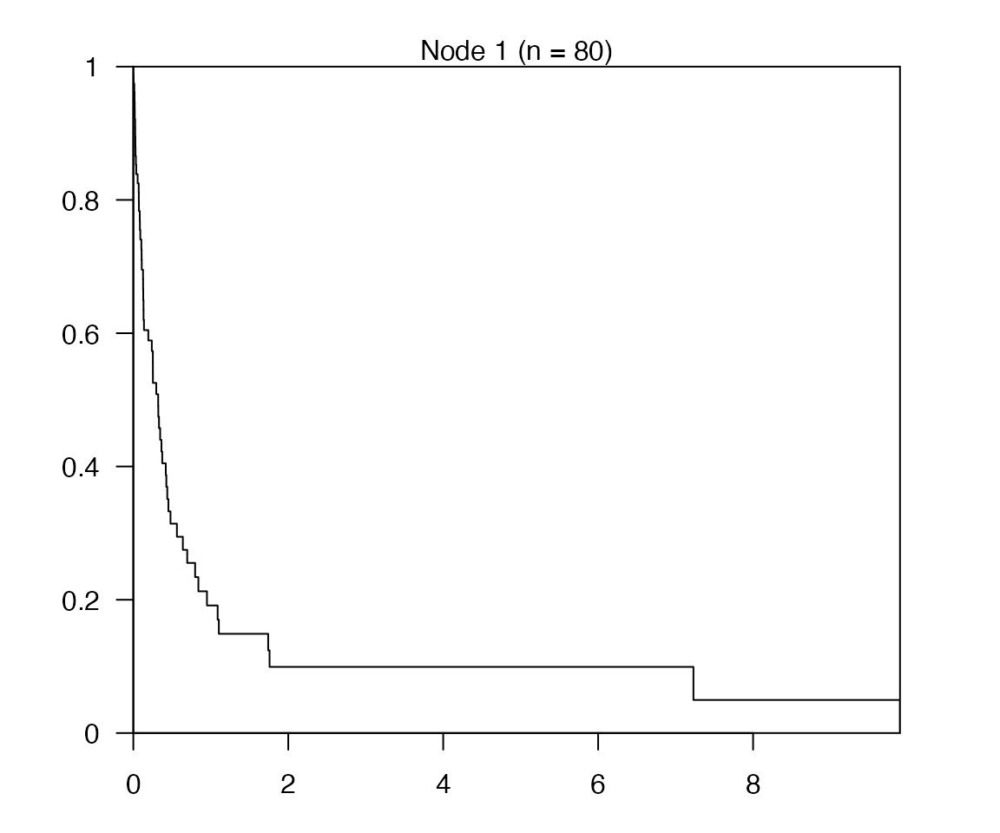
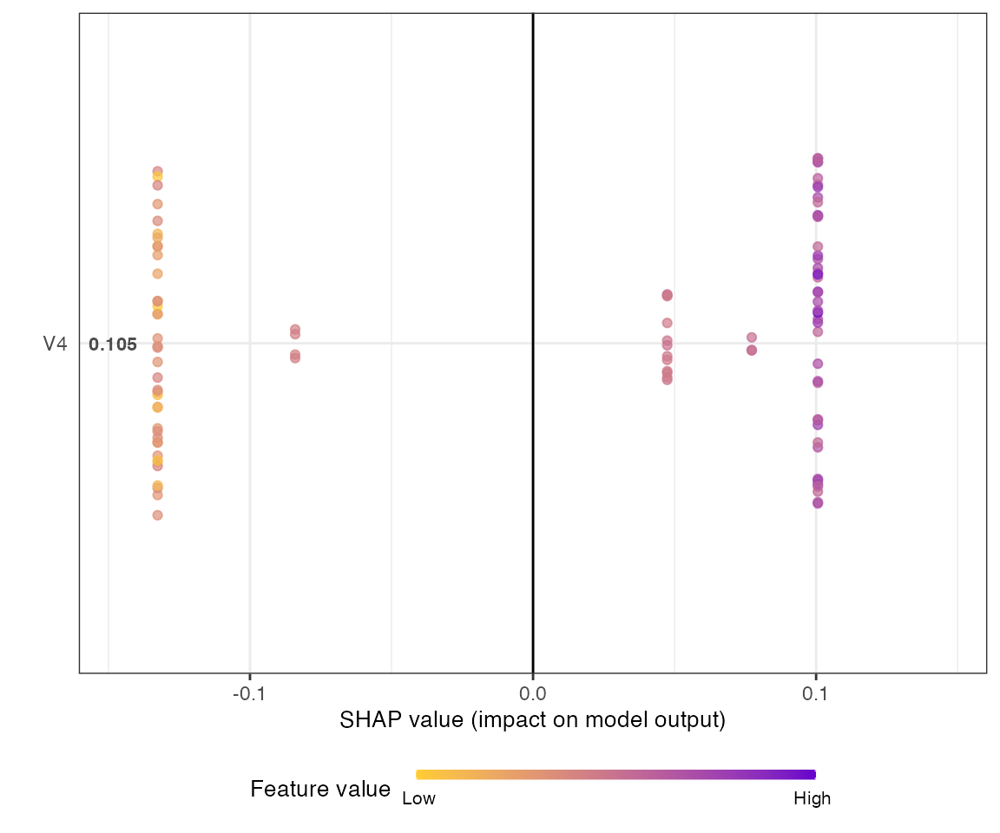
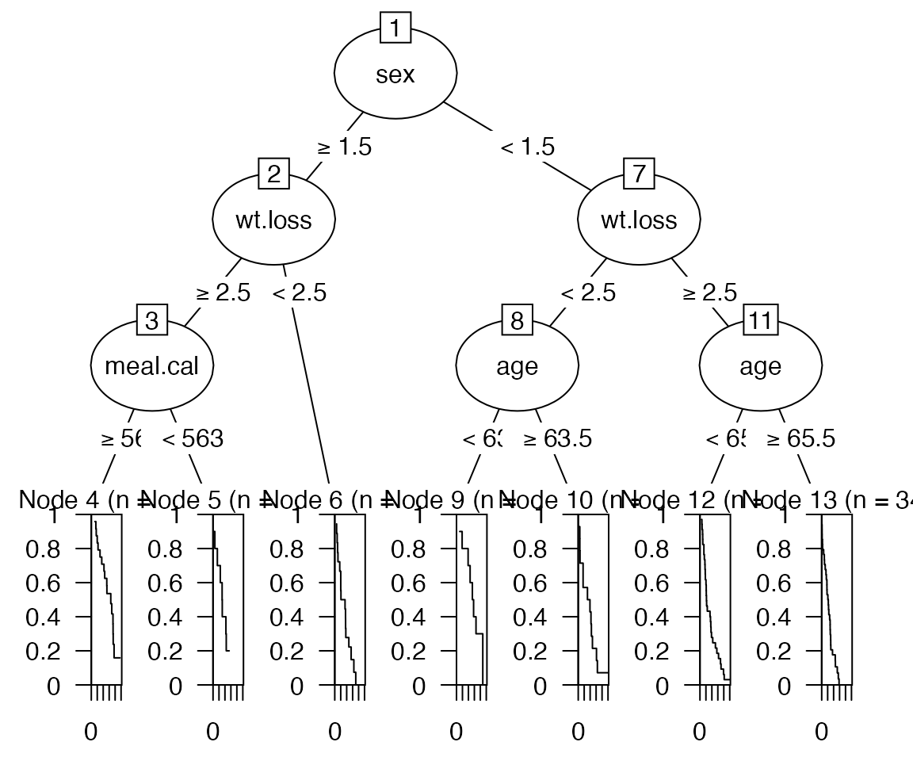
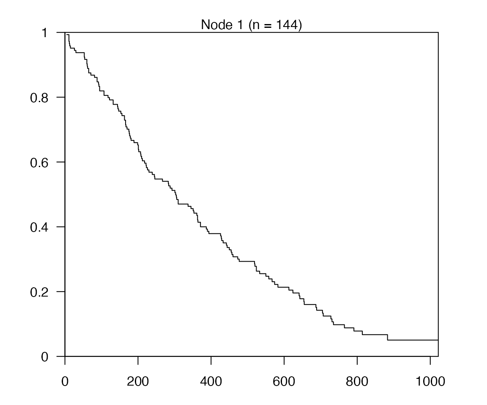
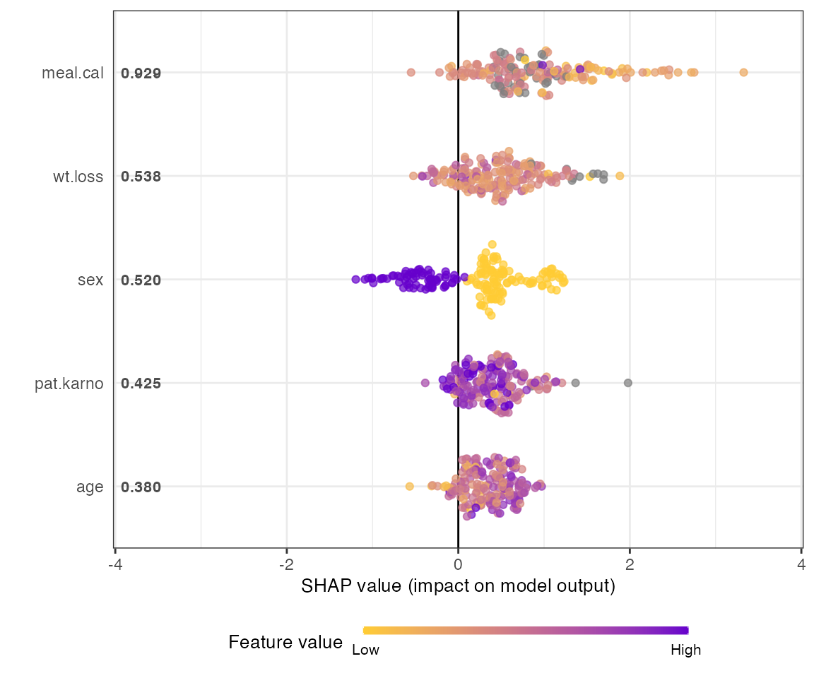

Tutorial
Tutorial.RmdSurvival data
Cox model
In biomedical studies, the cox proportional hazard model (Cox 1972) is the most commonly used model for the regression analysis of survival outcomes. \[ \lambda (t \mid x) = \lambda_{0}(t) \exp{H(x)} \] where H(.) is a risk score function that relates covariates and regression coefficients. In the standard Cox model, the risk score is a linear term, i.e., $ H(x)=x^{T}$ . In particular, Xsurv_sim_data can generate data with linear model.
library(Xsurv)
set.seed(981)
beta=c(0.1,0.5,0.2,1,0.01) #set beta value
sim_dat<-Xsurv_sim_data(size=100,dim=5,lambda=2,vu=1,
beta=beta, c_rate=0.25) Automatically tunning the parameter with Xsurv.cv function
X<-sim_dat[,1:5]
y<-sim_dat[,6:7]
xs_cv<-Xsurv.cv(X,y,option = 'lgb',search = 'rd',top_n = 1) #random search tunning parameter with lightgbm model
# both xgboost and lightgbm can be automatically tunning with Xsurv.cv
# xs_cv<-Xsurv.cv(X,y,option = 'xgb',search = 'grid')
xmod<-xs_cv$model
cindx<--xs_cv$cindex
xs_cv$SHAP
#The only selected feature is V4 (if you remember the simulation setting beta=c(0.1,0.5,0.2,1,0.01), V4 is the only one not close to 0.)Simple case study
library(survival)
data(lung) #Using lung data as an example
mydata<-(lung[,-1])
mydata[,2]<-mydata[,2]-1
length(mydata[,1])
#> [1] 228
names(mydata)<-colnames(mydata)
datay_train<-mydata[1:180,c(1,2)]
datax_train<-mydata[1:180,-c(1,2)]
datay_test<-mydata[181:228,c(1,2)]
datax_test<-mydata[181:228,-c(1,2)]
#A survival tree plot will be generated. cp here is the pre-specified complexity of tree.
xs<-Xsurv.cv(datax_train,datay_train,top_n=5,cp=0.01)
xm<-xs$model
xtree<-xs$tree$tree1
#ctree
xctree<-xs$tree$tree2
plot(xctree)
shap=xs$SHAP
shap
#prediction
# Xsurv can also predict the survival curve of a patient.
pre_x<-Xsurv_predict_sv(xm,datax_train,datay_train,datax_test[10,])
plot(pre_x)
#Actual survival time
datay_test[10,]
#> time status
#> 190 286 1